Okkar Dagbók
(Feb 24) Náðum mótori til að virka
Þann febrúar 24 hittumst við fyrst og byrjuðum á að reyna að láta mótor virka, við náðum að stjórna mótorinnum vel án vandamáls. Það var safnað hlutum til eins og ljósskynjara.
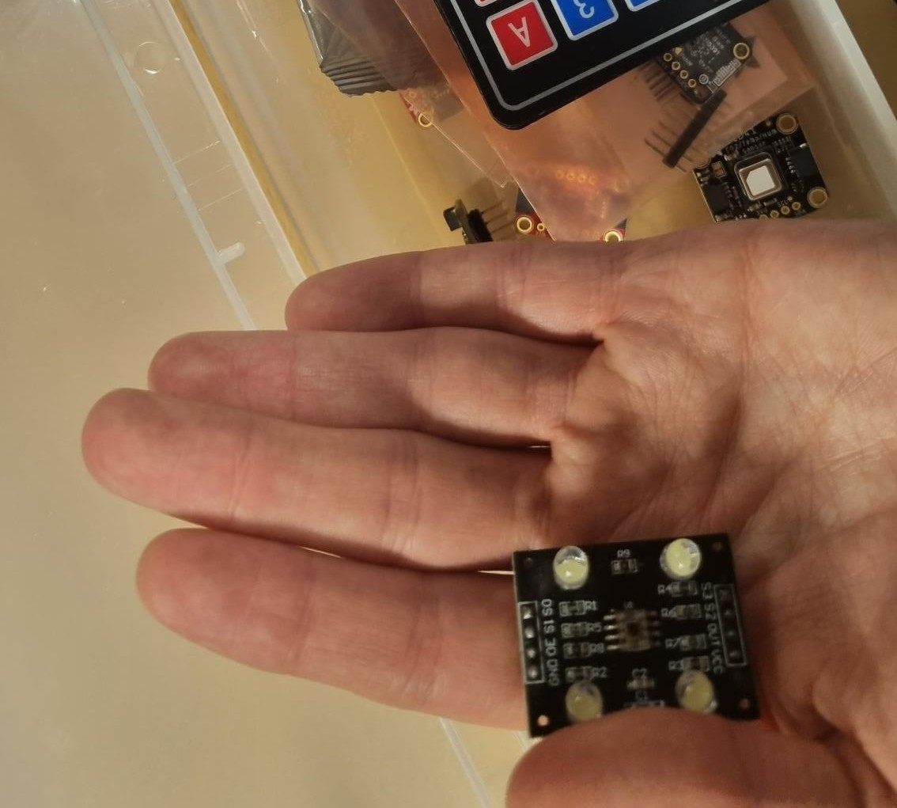(Feb 25) Tölva bjarka eyðinlagðist
Þegar við komumst saman febrúar 25 ætluðum við að byrja á að teikna upp vélmenni í fusion 360. En þegar Bjarki kveikti á tölvunni sinni gaus upp reyklykt. hann náði í skrújárn til að opna tölvuna og þá kom í ljós að skrúfa var laus í tölvunni og hafði settst milli móðurborðs og rafhlöðu, sem varð til þess að skammhleypti í tölvunni, og hún eyðinlagðist. Hann þurfti að fara heim til að reyna að bjarga tölvunni, en hún að lokum dæmd ónýt.
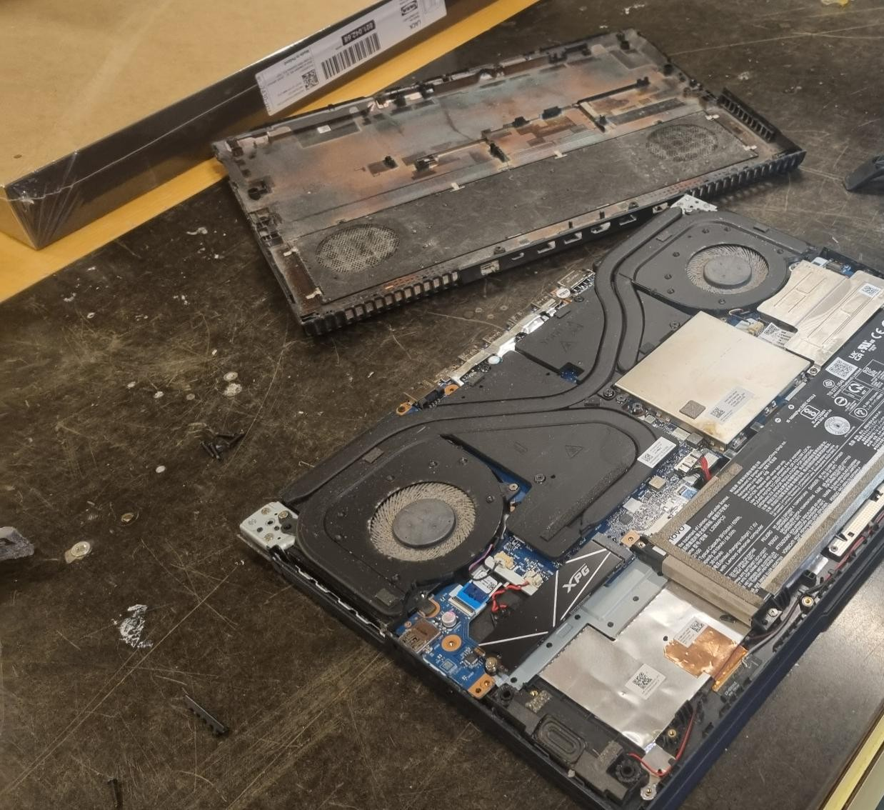 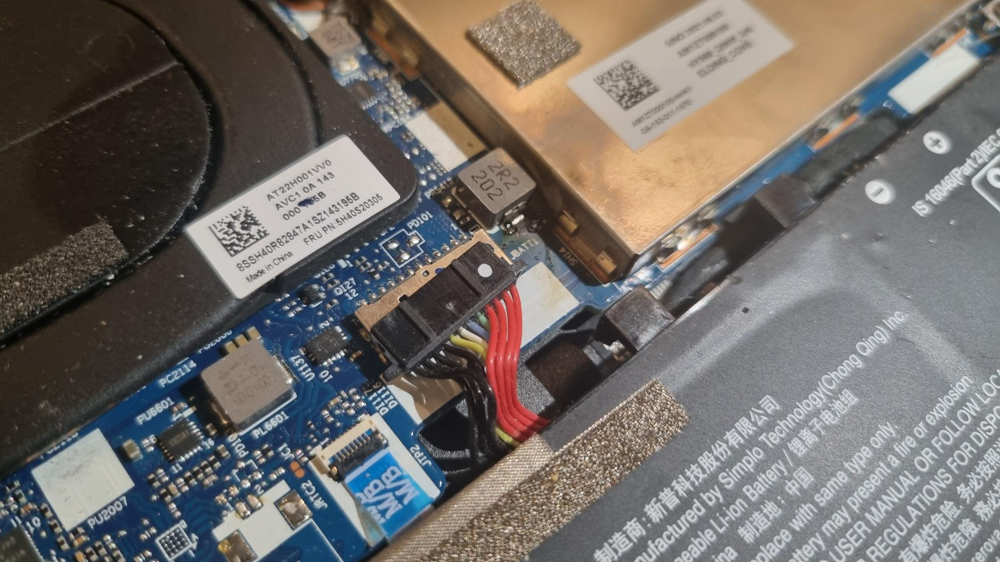(Feb 26) Discord
Daginn eftir að tölva Bjarka eyðinlagðist, keypti hann nýja tölvu og við töluðum saman á discord á meðan hann downloadaði fusion 360 og öðrum forritum. Það var teiknað smá prótype fyrir róbot sem var gerður til að sýna hugmynd um hvernig róbotinn gæti litið út. Ákveðið var að notast við beltadrifið 'linear actuator' form fyrir hreyfingu, aðallega vegna áreiðanleikasjónarmiða.
(Feb 27) Haldið áfram með teikningu
Þennan dag héltum við áfram með að teikna upp í fusion 360.
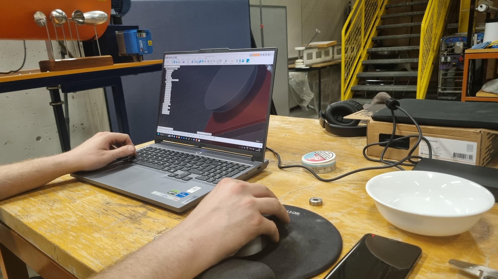(Feb 28) Haldið en þá áfram með teikningu í fusion
Við hittumst í VR-III og haldið var áfram með teikninguna heima, hún er að verða tilbúin (vonandi eru engar villur).
(Mars 6) 3D prenntun
Hér fór Halldór í VR-III til að prenta út þrjú trisuhjól sem verða notuð til að hreyfa skeiðina og reyna að fá viftu. Á endanum þurfti að teikna viftu í fusion 360 og svo 3D prenta seinna. Hafist var handa við vinnu á keyrsluforriti
 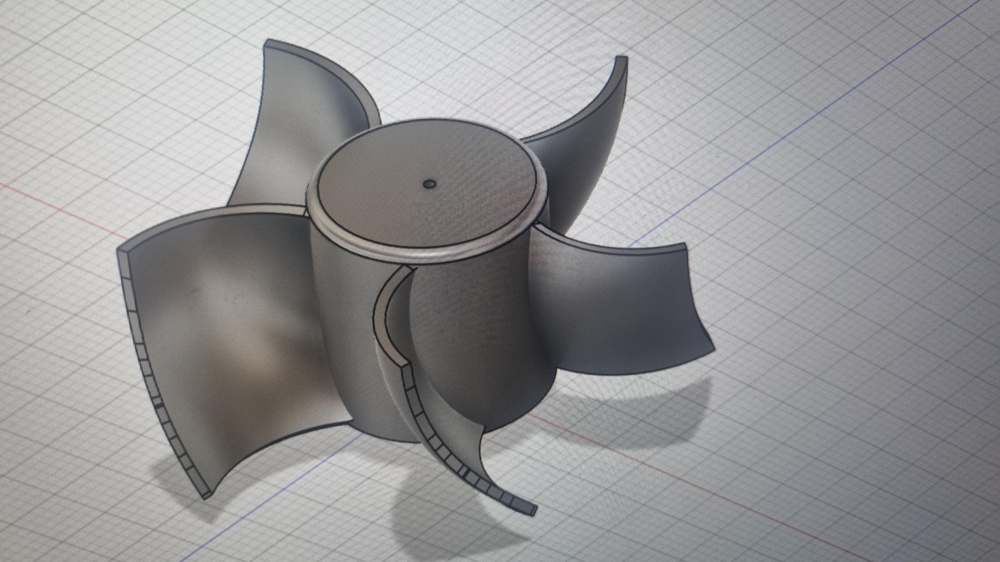
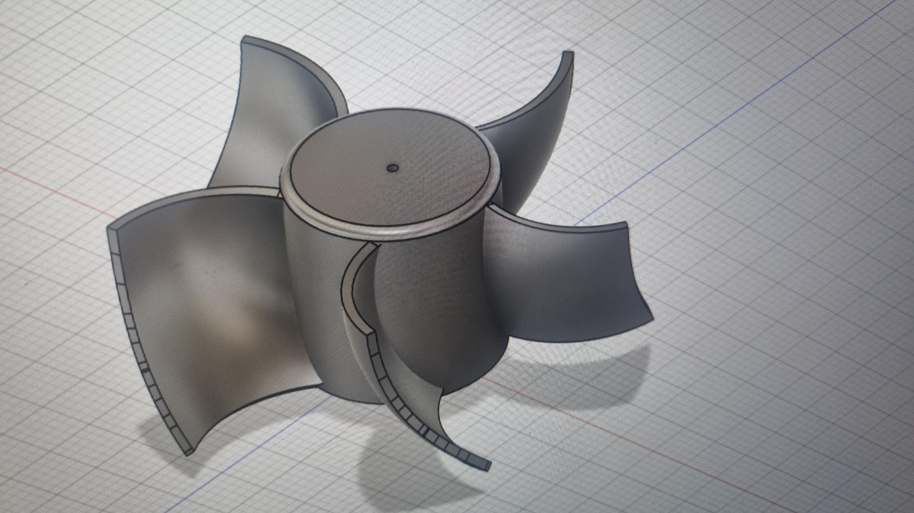
(Mars 7) Viftugerð
Þennan dag var vifta prenntuð, til að gæta þess að nota ekki mikið efni þá var prufað að prenta lítinn part af viftunni fyrst, sem hægt var að máta á mótorinn.
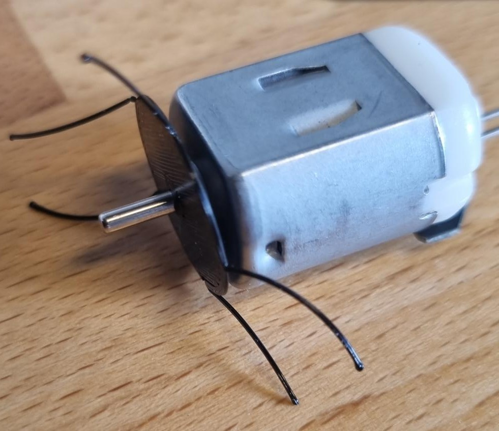Það kom ekki upp mikið vandamál með prufuna en því miður þurfti að prenta út 2 viftur því fyrsta passaði ekki inn í, þó það hafi virkað í prufunni.
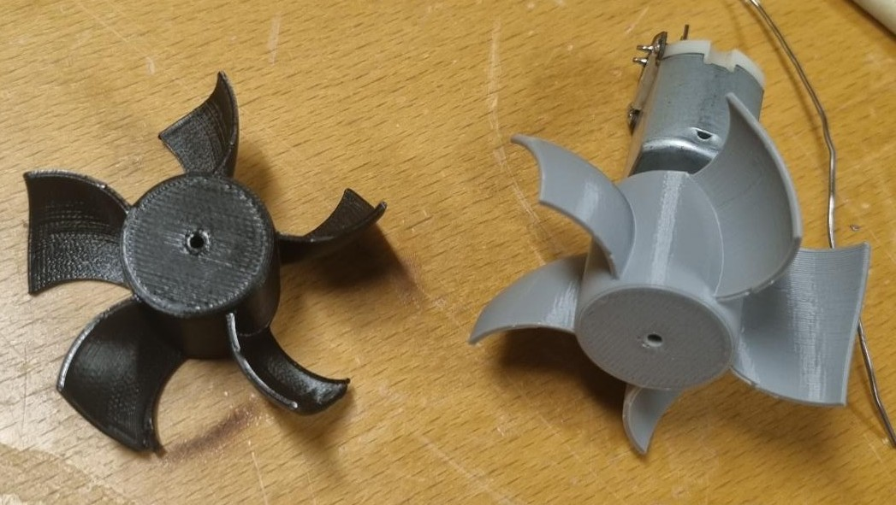Það var einnig 3D prentuð leiguhús.
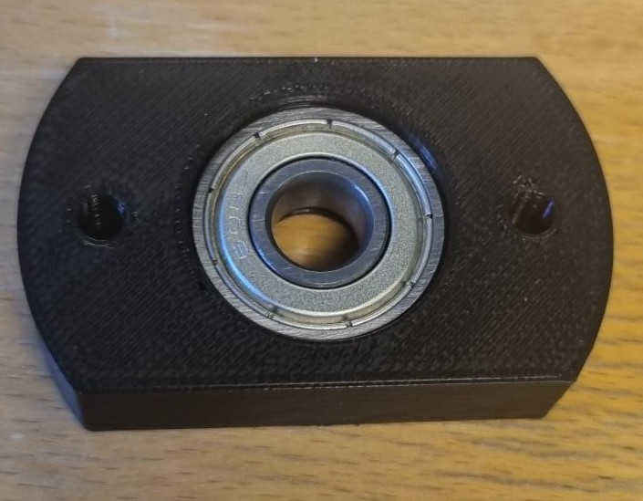(Mars 8) Fræsing viðar
Á þessum degi eru flest allar teikningar okkar tilbúnar og við byrjum að fræsa og prenta út allt sem við þurfum. Þar gekk frekkar vel en okkur vantaði en þá nokkra lokahluti eins og fætur til að halda uppi súpu róbótanum.
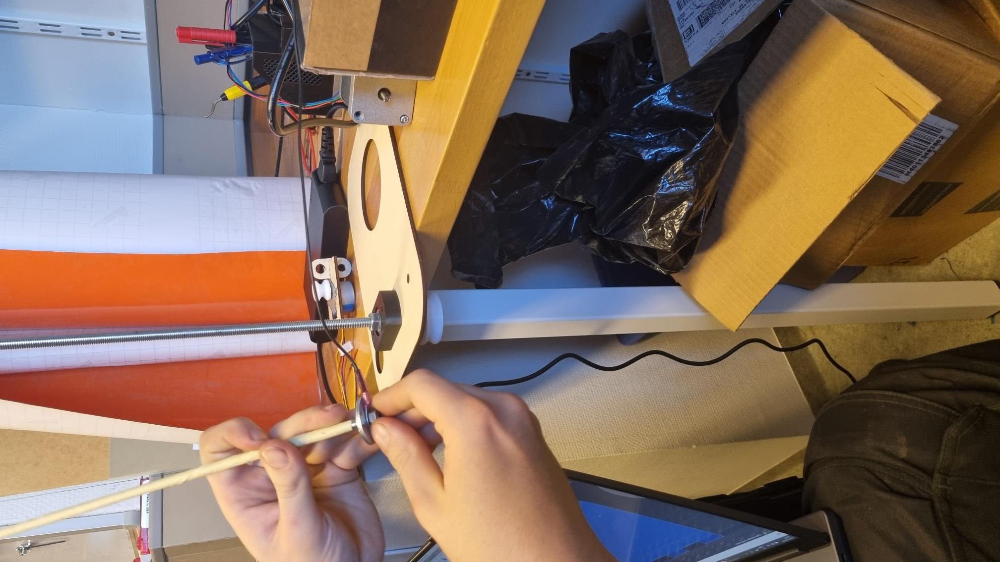(Mars 9) Lagfærsla fræsingar
Á þessum degi var lagað vandamál sem komu upp í fyrri dagi í fræsingunni þar sem við þurftum að færa staðsetningar á mótorum um. Hér var einnig byrjað á að setja upp vefsíðu sem gæti haldið upp öllum skilyrðum verkefnisins en það fannst engin, prufað var t.d WordPress.
(Mars 10)
Hér var almennilega byrjað á að setja upp vefsíðu en það voru nokkur vandamál með valmöguleika á þeim. Á endanum var gert vefsíðu með github því við höfuðum farið í áfanga sem kenndi hvernig á að setja upp github vefsíðu. Vefsíðan var set upp þar sem twitch og OBS er notað fyrir live myndbandið og það er einnig password á dagbókinni til að gæta þess að hún er lokuð fyrir almenning. Til þess að koma í veg fyrir að þurfa að stilla arminn upp á nýtt var ákveðið að notast við limit rofa, sem segja arminum hvenær hann er kominn aftur í núllstöðu.
(Mars 11) Lokahlaup
Yfir nótt var reynt að klára verkefnið, þar sem allir partar voru tilbúnir var eina sem þurfti að gera var að gæta þess að mótorarnir myndu keyra allt vel og að viðnámið myndi ekki eyðileggja tölvuna. Yfir höfuð var allt í lagi með róbotan en það var samt vandamál með hitamyndun. Einnig gekk róbotinn mjög hægt, þar sem afl mótora hafði verið vanmetið, og þar af leiðandi var notast við niðurgírun fyrir aukið tog, sem reyndist að lokum óþarft. Tilraunir til að hækka hraða á mótor enduðu með því að öðrum mótornum var ofgert, og um kl 06:00 ofhitnaði mótor, sem varð til þess trissuhjól skekktist vegna hitans. Nýtt hjól var sett í prentun á meðan kennararnir gáfu öðrum nemendum einkunnir.
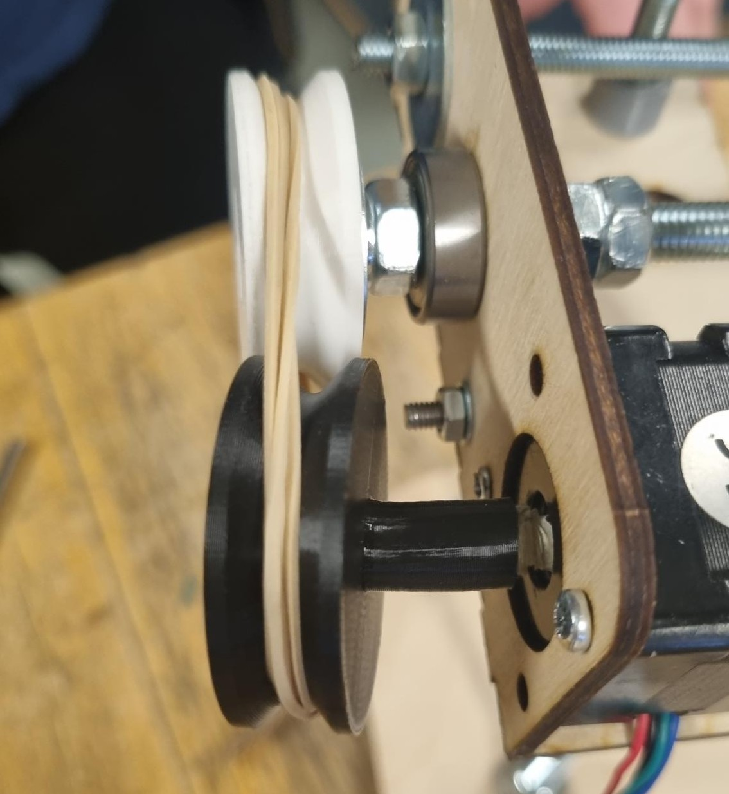 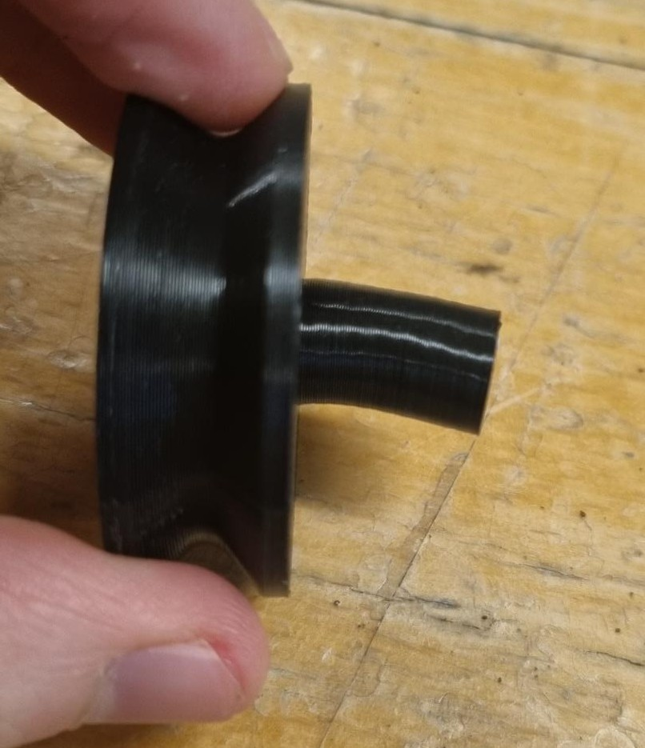(Mars 12) Lagfæring
Vegna vandamáls með hitamyndun mars 11 bráðnaði einn biti og við þurftum að endurprennta hann, við gerðum það með meiri þykkt til að koma í veg fyrir frekari bráðnun. Til að draga úr keyslutíma var gerð breyting á keyrsluforriti, þar sem báðir mótorar fyrir arma voru keyrðir samtímis.
(Mars 13) Endurtekið fall
Á Fimmtudegi var farið á aðra sýningu á róbotnum, sem endaði aftur með ósköpum þegar mótorarnir fyrir armanna byrjuðu að hiksta í upphafi keyrslu. Þá fékkst frekari frestur fram á mánudag, svo hægt væri að lagfæra vandamálið sem kom upp. Ástæðan reyndist vera innsláttarvilla í kóða, en stýringin sem var notuð fyrir róbotinn var RaspberyPi, keyrð í gegnum ssh með VNC remote desktop kerfi. Þá hafði kóðabútur fyrir limit rofa verið afritaður handvirkt af RPi tölvunni yfir á fartölvu, sem varð til þess að kerfið las af limit rofum 200 sinnum oftar en það átti að gera. Sá kóðabútur endaði svo aftur á RaspberyPi tölvunni með lokauppfærslu á kóðanum, sem átti bara að breyta því í hvaða stöðu armarnir áttu að fara.
(Mars 14)
Villa í kóða fundin, og lagfærð
(Mars 15)
Róbótinn var aftur fluttur niður í VR-III, og áætlað var að setja hann upp fyrir mánudag. Upp kom smá vandamál með að nettengja RPi tölvuna, og eftir margra klukkutíma vinnu við að reyna að koma nettengingu í lag, kom í ljós að tölvan hafði orðið fyrir skemmdum í flutningunum. Strax var hafist handa við að porta kóðann yfir í C++, og að breyta rafmangstengingum, svo hægt væri að keyra róbótann með Arduino.
(Mars 16)
Skipting yfir í Arduino var auðveldari en við var búist, og róbóti fluttur í seinasta skipti í VR-III. Róbótinn var keyrður 20-30 sinnum, til að ganga úr skugga um að engar villur kæmu upp. Þó kom upp nýtt vandamál eftir keyrslurnar, en hristingur fór að myndast í kerfinu eftir mikla notkun, og ákveðið var að draga örlítið úr hraðanum. Að lokum var gengið frá róbotnum, svo hann væri tilbúinn til sýningar á Mánudegi.
(Mars 17)
Mætt var niðrí skóla til að sýna róbótann. Sýningin tókst nokkuð vel, en víbringurinn var þó orðinn það mikill, meira að segja á lágum hraða, að meirihluti súpunnar endaði á gólfinu. Seinna um daginn var róbotinn svo tekinn í sundur, og ástæða fyrir víbringnum fundin, en tonnatak sem var notað til að halda ró fyrir Y-ás í róhúsi hafði bráðnað (enda mjög nálægt mótornum sem hafði ollið öllum hitavandamálunum), og límið hafði sest í gengjurnar á rónni. Það varð til þess að sveiflukennt álag myndaðist á drifkerfið, sem olli miklum titringi.